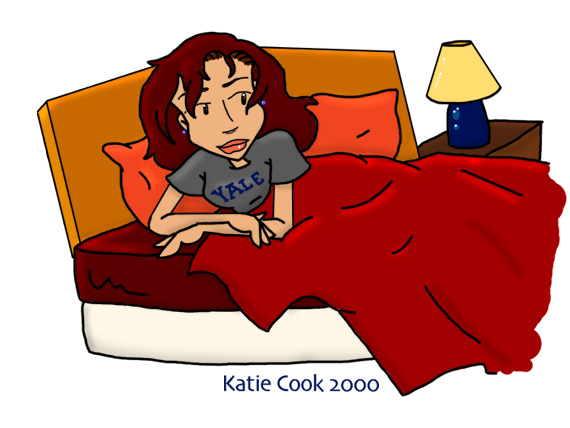

A House of Cards
by Diane Long
Chapter One
Daria rolled over in bed and pulled the blanket firmly over her head to block out the bright sunshine that leaked around the edges of the curtains. Inside her dark cocoon she yawned and stretched extending her legs as far as they would go, even flexing her toes. She relaxed then curled up into a tight ball. It was Saturday morning, and there was no need to get up if she didn't want to. She closed her eyes and burrowed deeper into the bedding. Wrapped in warm security, she let her thoughts drift away, allowing sleep to take her again.
Clank.
Daria's eyes popped open. What was that? Her heart beating a little quicker, she listened. There it was again, the sound of metal hitting metal and then the sound of running water. She pushed her way through the covers and sat up in bed. The room was an unrecognizable blur. With the ease born of long standing habit, she reached over to the nightstand and groped for her glasses and slipped them on. As the blurs sharpened into the unfamiliar shapes of strange furniture, she had a fleeting sensation of uncertainty. But as her eyes found a pair of boxer shorts draped carelessly over a vintage Gibson, Daria regained her bearings. This was Trent's bedroom and now it was her bedroom too.

She gathered the sheets around her neck and fought a rising feeling of panic. Damn, she had done it. She had actually moved in with him. She found breathing difficult as the sensation of panic grew. Trapped, she was trapped. What had she been thinking? She was too young for this. Too young to be tied down. She eased out of bed and went over to where her robe was hanging from one of the four posters. As she put it on, she noticed something large in the pocket. Putting her hand into the pocket she smiled as her fingers found the shape of a champagne flute. She pulled the glass out of her pocket, her sense of fear diminishing. Well, last night hadn't been a problem. She smirked and set the glass on top of the dresser. Maybe this would be okay, and if it wasn't she could always leave. Whenever she wanted.
Daria tightened her robe and her resolve and went to investigate the cacophony of clanging sounds. She opened the bedroom door and found herself in a cloud of acrid smoke. She coughed a little as the smoke detector in the hall started a high pitched pulse of alarm. A flour-dusted Trent appeared in the hallway muttering and waving a dishtowel at the smoke detector. As the smoke dissipated, the annoying alarm ceased almost immediately. Still grumbling, Trent rushed back into the kitchen.
Intrigued, Daria crept down the hall as quietly as she could and stuck her head around the kitchen door. The scene before her brought a full, genuine smile to her lips. The kitchen was completely trashed. Dirty pots and pans covered almost every flat surface, there were eggshells on the floor, boxes and containers of various ingredients stood open and spilled on the counters, and a faint sheen of flour coated everything. Trent was standing worriedly over a large frying pan holding a spatula like a club, looking as if he might need to defend himself from whatever he was cooking. His brow furrowed and he peered closely into the depths of the pan. He swore lowly and quickly dug in with the spatula. Soon a charred disk flew out to join many others on a plate.
"Damn!" he exclaimed with pique, his hands on his hips. He glared at the plate of burnt pancakes and shook his head.
Daria's smile widened. He was trying to make her breakfast. No one had ever done that before. Maybe this really wasn't a mistake. She leaned against the doorframe and watched him pour a small dollop of batter into the pan. He again struck his vigilant pose trying to be ready for the perfect moment to flip the pancake. Daria could tell from the red glow of the electric burner that he had the heat up way too high. This wasn't going to work. Should she tell him?
"Aw, man!" Trent groaned as he flipped a half burnt, half raw pancake onto the plate.
Daria slowly backed out of the room and tiptoed back to the bedroom. Let him come up with his own way to cope with this situation. The last thing she wanted to do was embarrass him while he was doing something nice for her. As she slid back into bed she heard the smoke alarm go off again accompanied with another strangled curse. She chuckled and laid her glasses on the nightstand. Poor Trent. Daria snuggled deeper into the blankets and dozed lightly, occasionally awakened by the clatter in the kitchen. A small smile flickered across her lips as she thought of Trent doing this for her. Feeling secure and wanted, she drifted into a deeper slumber, a place where she dreamed of her best memories....
....Trent unlocked the door and went into the cabin. Daria hauled both of their suitcases in behind him and looked around. Rugged walls with exposed daubing were accented by bright, framed prints of local wild flowers. A double bed blanketed by a cheerful patchwork quilt dominated the room and she was reminded of the unspoken reason they had come to this place. Suddenly she wanted to go home. She sneaked a look over at Trent as he busily tried to build a fire in the fieldstone fireplace. He didn't seem nervous. But then why would he? This probably wasn't a new thing for him. That thought made her feel even worse. She noticed that there was an old-fashioned claw-foot bathtub right by the fireplace. Super. She supposed that was meant to be a romantic touch, but to her it just meant that there was absolutely no privacy here, no place to hide. She sat on the bed and watched him fuss with the kindling. She should be studying right now, not on some interlude. Anyway, It was only her second semester at Yale. She couldn't afford to slack off right now. Chances were she had left her hot plate on in the dorm. If they left now, they could probably get back before the whole campus went up in flames. She looked at her boots and wished she were anywhere but there. Could she do this?
"Daria?"
Daria looked up, and noticed that she had begun to hug herself while she was lost in thought. She blushed at her nervousness and put her arms at her sides.
Trent got to his feet. "The main lodge has some cocoa going this time of day. I'm gonna go get us some."
He casually started filling the tub with hot water as he spoke. As the water ran, he picked up two bottles of bubble bath that had been sitting on the hearth and read the labels with an air of casual distraction. "Cinnamon or rose?"
"Cinnamon," she answered in a strained voice. It was obvious where this was leading. Jesus, they had barely been there fifteen minutes.
He nodded as if agreeing with her choice and squeezed a generous amount of cinnamon bubble bath into the tub. He closed the container with a snap and set it back on the hearth. He stretched and walked over to her. "Why don't you have a nice soak while I'm gone? You deserve it."
Her blush darkened, much to her further embarrassment. "Okay."
Trent smiled softly and stroked her cheek with the tips of his fingers. "I'll be back in about twenty minutes."
Daria met his eyes and nodded. She tried to smile, but her bottom lip trembled, making it look more like a grimace. Luckily he didn't seem to notice. Acting as if nothing unusual was afoot, he sauntered out of the cabin and shut the door behind him. Daria, sat there for awhile and watched the water run into the tub. What was he thinking right now? That she was being childish about this? That she was stupid and fearful? Despite his seeming oblivion to her discomfort, she had learned a thing or two about him in the past year and a half. Trent noticed things, but unless he wanted you to know about it he didn't let on. She must have driven him out of the room with her ill-concealed anxiety. He probably couldn't wait to get home either. This was a mistake.
She stood up and went over to turn off the tap. She tested the water and found that it was pleasantly warm, but not too hot. Maybe a soak would be nice. She was still a little cold from the hike up to this place. Maybe it would ease her mind too. And if she hurried, she could be done before Trent got back. She pulled her sweatshirt over her head and shivered. Despite the fire, this little cabin was cold. She quickly removed the rest of her clothing and left it in a rumpled pile. She stepped over the high edge of the tub and slid into the warm water until the suds tickled her nose. It felt heavenly and the rich scent of cinnamon was comforting. It reminded her of homemade cookies, though she wasn't sure why. It wasn't as if homemade anything had been a large part of her life. She inhaled deeply, enjoying the scent. For some reason it made her feel warm inside. But why? Then she had it. Trent had given her a very large bag of cinnamon hearts for Valentine's day. More than she could possibly ever eat. She had taken to keeping a small bowl of them by her desk in her dorm to munch on while she studied. But instead of eating them, she mostly just ran her fingers through the bowl while she read, enjoying the feel of the small candies swirling around and the tiny ticking sounds they made as they tumbled together. The scent of cinnamon became stronger when she did this and often stayed on her fingers for the rest of the day. Cinnamon was comforting because it reminded her of Trent.
Daria sat up a little straighter as she thought, the tops of her shoulders coming out of the water. She leaned her head back against the edge of the tub and closed her eyes. Trent. He was someone who thought she was beautiful, even when she didn't really herself. Trent trusted her, respected her, loved her... so what was the problem here? It wasn't him. God, she had thought he was astonishing from the moment she had laid eyes on him. He could still make her heart hammer in her chest when he looked at her a certain way. Even more so, now that she knew that he looked as good out of his clothes as he did in them. Even better, actually. As she thought of this, her pulse quickened and she found herself hoping he would hurry back. It wasn't as if this would be the first time they had seen or touched each other's bodies. It was just the last big step. This weekend had even been her idea, damn it. She was ready to try this. She wanted to try this.
Flushing from more than the heat of the bath, She thought of the many times they had just slept together. The last time she had woken up wearing only the sheets. The look in Trent's eyes as he rolled over and his bare skin touched hers still excited her. The memory of his callused fingertips running over her skin excited her further...
"Daria?"
Daria started, and turned to see Trent standing in the doorway. He had that same look in his eyes as he watched her. She noticed his hands were empty.
"No cocoa at the lodge?"
One arm snaked out from his side and flipped off the light switch. "Nah."
Now the only light in the room was from the fireplace and it cast a rosy orange colour to Daria's wet skin. She looked at a knee that was sticking out of the froth of bubbles and asked, "You didn't expect there to be, did you?".
Trent shrugged and flopped onto the bed. He scooted up to the headboard and leaned against it, with his arms crossed behind his head. He watched her in silence for a long moment, with a small but eager grin pulling at his lips.
She looked up at him, suddenly ready for everything. "What are you doing?"
"Watching you."
"Oh." She bit her lip in frustration.
"And thinking about drying you off all by myself," he murmured.
Daria's breath quickened and she gripped the edges of the tub tightly. "Then what?"
"I'll do my best to keep you warm." He said slyly, a bit of humor creeping into his voice. "But I may just sit here and watch you for a while." He made no move to get up.
Daria thought for a moment. "First, I need some help washing my back. Please?" She held up a sea sponge in invitation.
Trent raised an eyebrow at her in a look that was a cross between a smirk and a leer as he got off of the bed. He walked over and knelt behind her, his breath brushing by her earlobes as his hands slid down the soapy slick skin of her back....
....Daria was awakened by a gentle hand on her shoulder. She slowly opened one eye and squinted at Trent who was sitting on the edge of the bed.
"Hey, Sleepy-head," he said softly.
"You're one to talk," she mumbled. She rolled over onto her back and pushed up onto her elbows. She regarded him from behind a shaggy lock of hair that that had fallen over one eye. The rest of her hair was a tangled and messy knot.
Trent's grin widened. Here was Daria looking grumpy and tousled in his bed. She looked so real and perfect just then all pretenses still put away for the night. The fact that he would find her here every morning was even better. "Yeah. I guess I'm just excited to have you here."
Daria's expression softened, her early anxieties still sleeping. Right now she felt warm and happy. Shy smiled shyly at him. "Me too." Then she easily fell back into her comfortable smirk. "I just can't wait to take advantage of community property laws."
Trent arched an eyebrow and said, "Too bad we don't have those in New York. You're outta luck." He tried to run a hand through the hair at the nape of her neck. It got caught in her morning net of tangles.
"Damn!" she said, pretending to be put off by the news, but still allowing him to push her head closer to his. Then she added softly, "I was dreaming about the cabin again."
Trent looked wistful and leaned forward to give her a proper good morning kiss: Brief and affectionate.
Daria had other ideas. Trent tried to pull away, but Daria used both of her hands to gently keep him close. Soon she was delivering her own idea of a morning kiss. While Trent's kiss had only meant 'hello', Daria's kisses said 'Stay a while.'
Trent ignored the temptation to join her in bed for a little while longer and pulled away. "Daria. I have a surprise for you."
She pushed the stray lock of hair behind her ears and said, "You are still in your clothes. That is a surprise." She made a move to help him out of his sweatshirt. Trent grabbed her hands and kissed their palms. He laid them in her lap and handed her glasses.
"It's a really cool surprise Daria." He stood and extended a hand. Looking curious, she accepted the hand and let him pull her out of bed. She tied the sash of her robe and followed him out of the room. Once in the hall, Trent hurried along to the spare bedroom and paused at the door. He slouched and tried to act causal, but the sparkle in his eyes betrayed his excitement. Daria stopped and arched her eyebrows.
Without a word, Trent pushed open the heavy oak door and motioned for her to precede him. Not being particularly fond of surprises, Daria entered slowly and cautiously. It only took a moment for her eyes to widen and for her mouth to pucker in surprise. The room had been converted into her dream office. Dark wooden bookcases lined the walls, and her own books had already been delivered and unpacked. A Tiffany's style floor lamp with a dragonfly design in blue and green glass arched gracefully over the back of a leather reading chair with a matching ottoman. Daria looked to her right and saw the 1920's vintage newsroom desk she and Trent had been looking at in a neighborhood antique shop had found its way up here and was improved by the edition of a nifty ergonomic office chair. As if they were the icing on the cake, Daria's lap top, a copy of the 'Times, a sack of donuts, and two venti Starbuck's takeout cups graced the top of the desk. It was perfect... but... She turned to find Trent beaming at her. She smiled uncertainly. "Trent, this looks terribly expensive."
Trent shoved his hands in his jean's front pockets. "Then be sure to send Helen and Jake a thank-you note."
"Mom and Dad are responsible for this?"
"Yup. This is mostly their graduation present for you."
"Whoa." Daria looked pleased. Her relationship with her parents had done nothing but improve from the moment she had left for college. They all interacted much better as adults. "Mostly?"
"Yeah." Trent gestured towards the lamp. "That's from Quinn."
"Quinn?!?"
"I couldn't believe it either. She called about a week ago and asked what you would like."
"Wow. That was really considerate of her," Daria said with quiet amazement.
"She's growing up. It's a real Tiffany lamp by the way. Same period as the desk."
Daria looked stunned.
"She is a very well paid model you know," he reminded gently.
"And her good taste has always been a constant." She shook her head in bemusement. "Anything else I should know?"
"Ummm... breakfast is from me. Welcome home, Daria." He walked over with deliberate steps and kissed her slowly, marking this moment in their lives solemnly.
His seriousness awoke her quiescent anxiety, and she broke away first feeling her stomach knot up. She masked her confusion by walking over to the windows and taking in the view. "Wow. You can see the river from this window." She pushed up the sash and stuck her head out to see better. She looked down at the wide concrete ledge that ran under the window and traced along the building. "Hey, look at this. Where do you think it goes?"
Trent stuck his head out and looked to where she was pointing. He paled visibly and took a firm hold on her hips. "Who knows? It's too high to go find out." He tugged gently and she pulled herself inside.
"Go on, sit at your desk. See if it fits," Trent said making playful shooing motions with his hands.
Still thinking about where the ledge went, Daria padded over to the desk and slid the chair back. She slowly eased into the chair enjoying how it seemed to mold into the contours of her lower back. Enjoying the lower lumbar support, she scooted up close the desk and folded her arms across the top. It fit like a dream. "Nice."
Trent hopped up onto the front of the desk and sat there letting his long legs dangle. He claimed one cup of coffee and slid the other one towards Daria. With his free hand he opened the white wax paper bag and pulled out a shiny glazed donut and handed it to her. "I slaved over this all morning," he said teasingly.
Knowing that in a way he had, Daria graced him with one of her rare, open smiles. She held his eyes for a long moment, silently thanking him for his kindness.
The sweetness in her expression unnerved him. "What?" he asked uncomfortably.
Realizing that he wasn't going to share this morning's struggle with her, Daria broke eye contact and took an enormous bite of donut, her cheeks bulging as she chewed.
Trent gave a chuckle that was mostly cough and eased his throat with a long drink of coffee. He must be coming down with something, because he didn't play in that many smoky bars anymore. The theatre where Les Miserables was playing was completely smoke free. Trent only played in blues clubs for fun now, less than once a week, which meant less exposure to cigarette smoke. He wondered if he had any cough syrup left. Maybe they could get some while they were out today. Now that they were living together, they could run around with each other on Saturdays. He grinned. Being alone completely sucked. It would be good to hang around Daria and do things together. "So what are we going to do today?"
Not planning to leave the house, and maybe not even the office for the day, Daria lazily grabbed the newspaper and flipped to the want ads. "Hmmmm... looking for a job would be a good start."
Trent laid a hand on the newspaper to stop her flipping. "What's the rush?"
Daria looked at him blankly. "Excuse me?"
"You just got here. Give yourself a chance to settle in."
Daria tugged the paper out from under his hands in irritation, her sense of uncertainty strengthening. She continued looking for the right section. "I am going to pull my own weight," she said lowly.
Trent sensed her change in mood and proceeded with caution. "You will, I'm not worried about that. But... I'm also cool with you easing into your new life here. Finding a job in this city is tough."
"I saw a 'help wanted' sign in the diner's window."
Trent hoped she was joking, but couldn't tell. "Yeah, right. You waiting tables."
Daria bristled. "I could do it."
"Of course you could. But you don't have to. You'd never be happy doing something like that."
There was a long silence as Daria found the want ads and started to peruse them.
Trent tired again. "Daria, you are way too smart to jump at the first stupid job that you find."
Daria looked up, her cheeks flushed in embarrassment. "But Trent," she said in a strained voice. "I don't have very much money in my bank account."
Trent quirked an eyebrow in surprise. She was really getting worked up, for her. "Of course not," he said soothingly. You just graduated from college two months ago. How could you?"
She worried the edge of the paper and wouldn't look him in the eye. "But I have bills to pay now. Rent, utilities, food." She got to her feet and leaned forward over the desk, her weight resting on the palms of her hands. "Right now, I can't do that. I need a job."
Trent looked at her calmly. "While you were in school, I was establishing my career. I'm ahead of you. Let me help while you catch up."
"You mean try to find a writing job. In this city?" she asked incredulously, knowing how out-classed she was.
"No. I mean use this office. Write for yourself. Listen to your muse. Something good will come out of it."
"My muse," she repeated, barely hearing the words as she uttered them. She felt her throat close as the small fears she had been fighting all morning grew to maturity. Money was power...economic freedom. She couldn't let Trent support her as he was suggesting. Then he would control her too. She thought of the control Helen had over her father. She had always said that would never happen to her. Feeling her fears spiral out of control and proportion, she tried to think direct and simple thoughts of reason. 'Trent is not like mom.' 'Trent is not a controlling person... he can't even control himself.'
Trent watched Daria's conflicting emotions play subtly across her face. Recognizing that this turmoil must involve him he kept quiet, though his eyes betrayed his concern. Knowing Daria as he did, he saw a pivotal moment cresting. Something big was brewing in her, something that could tip her into his life for a while longer or something that would make her abandon ship. He still couldn't believe she had agreed to come live with him, and had half expected a moment like this. He held his tongue, because if she choose to flee today, he didn't want to be the cause.
Daria's attempts at reason were failing her. She wrapped her arms around herself and squeezed her eyes tightly closed. It felt as if her panic might physically blow her away. She could sense Trent sitting still and silent at the edge of the desk. She knew she was hurting him and hated herself for it. For his sake she fought the strangling tightness of her throat. She had to explain. He needed to know. Grand explanations and eloquent apologies begged to spill from her lips. But instead she could only say, "I can't," in a low whisper.
"Why not?" Trent asked in a neutral voice.
Eyes still closed, she muttered, "This is too fast."
"Then how can we slow it down?"
Daria unscrewed one eye and looked at him, only the words wouldn't come. She just looked at him, feeling guilty about the fear in his eyes.
Trent tried again patiently. "Will you tell me what's wrong? Please?"
Daria shut her eye again. "I'm scared." She said it so softly he barely heard it.
She heard a whisper of sound and suddenly his arms were around her, warm and comforting. She leaned into his strength and let it ground her. "It's not you. Never you,' she murmured.
"Then what?" he asked into her hair.
"Freedom." This word summed it all up into a neat package for her, but she could tell from his continued silence that he needed more. So, her arms finding their way around him, she haltingly told him of her fears. Of how she didn't want to be like her father in this way as she was like him in so many other ways. As she got to this last bit, her eyes filled with tears that threatened to spill, and her voice took on the hiccupy quality of repressed sobs.
Trent tightened his hold on her and said lovingly, "What's wrong with taking care of someone you love?"
"Trent, didn't you understand any of what I just said?"
"I guess not."
"I wondered. Let me try again." She cleared her throat to ease its thickness, and tried again. "I'm not sure how to say this..." She chewed on her lower lip for a second. "I mean, I'm not certain when I began to feel this way, but..." She paused, sifting through various memories, trying to select the right words to articulate her fear. Memories of Quinn rapidly gaining a deft hand at parental manipulation. This had lead to Daria always getting the short shrift. Like how she had ended up getting hand me downs from Quinn, even though Daria was the older sibling. Memories of her parent's notion that Daria had everything she needed because she never demanded more.
Here were the roots of her descent into pathological self-reliance. Her notion that she would handle everything herself, that she would make certain that she was ok if no one else would do it. Overtime, she had lain the bricks of her own wall of isolation, and her strong sense of self-reliance had twisted into a sense of self-preservation. It had become the desperate belief that if she didn't take care of herself, no one else would and she would be lost. "But, I think..." She fought to come up with words that wouldn't sound silly and meaningless to him as it seemed to her now. The way nightmares sound silly when you try to tell someone about them the next morning. "You see..."
She stiffened in his arms and let out sharp, frustrated sigh. "Oh, never mind." If she couldn't find the right words then she just wouldn't tell him.
"Daria..."
"I'll be fine." The emphasis she put on fine was like a slamming door. Trent knew this conversation was over. Daria shook off his embrace and grabbed the paper, flipping brusquely to the arts section. She sipped her coffee and read as if nothing untoward had happened.
Trent reluctantly let the issue die. This wasn't the first time she had just turned off on him, but he still didn't like it. He wanted to hold her and make her feel safe enough to tell him her worries. Just like he had done with Janey when she was growing up. But he knew better by now. The first (and last) time he had pushed an emotional issue with Daria, he had found himself kicked out of her dorm room and spending the night in an empty classroom on the Yale campus. She hadn't spoken to him for weeks after that. He shifted uncomfortably and wondered if he should just leave and give her some peace. This was quickly growing into an awkward moment.
Daria looked up at him over the edge of her cup. "I'll make a deal with you. I will take it easy for two months. If I haven't found a worthier occupation by then, I'm waiting tables." She raised an eyebrow and awaited his response.
Trent knew how to pick his battles and let this one slide. He could readdress this issue in two months if needed. "Cool."
"Fine then," she said, refocusing her attention to the paper.
Trent kissed the top of her head. "I'm going to go practice in my office. Love you."
She looked up again, her eyes defrosting. "Walk with me in the park later?"
"Sounds good," he said warmly and left the room.
Daria sighed and watched him go. Well, he had respected her boundaries on all levels. This was good. Maybe this would work.
Chapter Two
Several hours passed as they were each absorbed in their individual pursuits. As the shadows in the apartment shifted according to the path of the sun, the only sounds were the soft clicking of keyboard typing, and the muted strains of an acoustic guitar.
Daria stretched, happy to find that this new chair was so wonderfully designed. She wasn't sore at all. She could write forever in a chair like this. She looked over her electronic journal entry and saved the file. Today had stirred some powerful feelings from their hiding places and she wanted to be sure to capture them in words before the feelings were inaccessible again. Maybe she could learn from all of this. She opened up a new document and stared at the blinking cursor. Listen to her muse, huh?
She strained to hear something, anything. The white of the blank page seemed too bright. The glare hurt her eyes. She hit a key at random and kept it down. A row of J's spread across the screen. They didn't offer an inspiration either. Shaking her head, she deleted them and closed out her word processing program and turned off the computer. Maybe she should just unpack and get better settled in before she really tried to write anything. She got up from her desk and wandered back towards the bedroom. As she passed Trent's office, the door opened.
"Oh, hey Daria," he said stepping out into the hall. "I was just coming to look for you." He looked at her closely to see if there were still any signs of distress. All traces of an emotional display were gone. She looked completely unaffected, as if nothing had happened. He wished she would let him in more and tried not to take it personally. Maybe in time she would tell him her secrets. "I got a page from Jack--you remember Jack...right? He's the sax player I'm trying to get to join my blues band. I'm going to go have a coffee with him. Want to come?"
Daria considered. "Nope. I think I'd rather go for a walk in the park."
Trent slapped a hand to his forehead. "Oh man! I told you I would come too! I'm sorry, let me call Jack and cancel with him."
Daria put a hand on his shoulder. "You don't have to do that Trent. Remember, I like to do things by myself. It's no problem."
Trent grabbed her hand and swung her close. Kissing her lightly on the tip of her nose, he said, "Thanks for understanding." Then his eyelids closed half way and he held her more tightly. "But I don't understand why I ever let you leave the bedroom this morning," he said his voice a sultry rumble. He pressed his lips to hers and purred into her mouth as he kissed her. She responded with a surprising intensity and soon it was hard to tell where one kiss ended and the next began.
She felt him slowly untying her robe's sash and shifted to give him more room. Her robe fell open. With a gentle push from Trent it slid over her shoulders and pooled at her feet. She shivered as the cool air of the hallway brushed her bare skin, but she didn't mind. She hooked a finger in one of his jean's belt loops and pulled his hips closer. She rubbed her thumb over the button of his fly and looked mischievously at him.
Trent's eyes widened and then closed as he grabbed her shoulders and laid a smoking kiss on her. The momentum pushed them both against the wall and something crashed. Neither paid this any attention as they sank to the floor....
Much later, Daria rubbed the slight rug burn on her elbow and said smugly, "Poor Jack. He'll think you stood him up."
"Aw, shit!" Trent jumped to his feet, rapidly wiggling into his jeans. He grabbed his sweatshirt and was shoving it over his head as he rushed toward the front door.
"Trent!" Daria called. "Your boots!"
"Oh, right!" He scuttled back over and slid his feet into his boots without bothering to lace them up as he hurried back towards the front door.
Daria watched in amusement, her arms curled around her bare knees. "Bye."
He paused and looked back at her, sitting there, looking up at him. He grinned and hurried back over to her. "Bye." He bent over and kissed her cheek lightly. "See you later. I'll be back by... ummm...four at the latest." He walked quickly into the foyer.
Daria smirked, not really believing it, though he did seem to be wearing a watch these days. She listened to the rattle of the front door opening and closing, then got to her feet as she heard the dead bolt snap into place. She picked her robe off of the floor and headed to the master bedroom. She tossed the robe across the bed and walked into the connecting bath. She wrinkled her nose. It was a disaster area. Various damp and crumpled towels shared floor space with heaps of dirty clothes. As she carefully picked her way towards the sink she saw that it got worse. The entire vanity was covered with soap scum and what appeared to be thousands of tiny hairs left over from Trent's daily shaving. She looked dubiously at the cup that held Trent's toothbrush. It was crusted with dried on toothpaste residue and something green that she couldn't identify. This room was truly disgusting. She didn't even want to investigate the toilet (whose seat was predictably up). She backed out and shut the door firmly behind her. She picked up her over-night case and headed towards the guest bathroom. It was conveniently located inside of her office too (as it had once been a guest bedroom). She would just set up shop in there. This was one co-habitation problem that was easily fixed. No need to fuss about Trent's bathroom when she could easily claim the other one.
She was about to step in the shower when a familiar quacking sound caught her attention. She peeked out into the office and saw Trent's old duck phone sitting on the window ledge by her new reading chair. She almost didn't answer it, but decided she should in case it was important gig information for Trent.
"Hello," she said shivering, wishing she had put her robe back on.
"Hey, Daria! It's me. How are you, Amiga?"
"The same as always," Daria said with a happy smirk. She had wondered when Jane would get around to welcoming her to the city.
"Yeah, I'll just bet," Jane said her own smirk ringing in her voice. "My poor, poor brother. I bet his knees will never be the same."
Daria blushed. Jane still had the knack for getting to her. "Umm..." she said, sounding guilty, even to her own ears.
Jane laughed evilly and decided to let Daria off of the hook for now. "So, you got in okay last night? I heard there were record delays at JFK yesterday. And that's saying something."
"Yeah. My flight got in before the bomb threat. Thank God."
"Cool. Hey, I know that most of your stuff won't arrive for a few more days. Anything you need?"
Daria knew the limited supply of clothing she had brought on the plane wouldn't last very long. Besides, she needed some other things too. As much as she hated to do it, a little bit of shopping was in order. "Yeah. I need some stuff."
"Great. Bloomies?"
"As long as they sell Pinesol."
"You are really weird Daria."
Thinking that the condition of Trent's bathroom betokened a lack of the most basic of cleaning supplies, Daria only smirked. "You going to drive?"
"In this town? We'll take the subway. I'll be by in a half-an hour."
Chapter Three
After hours of running around the city with Jane, Daria was happy to return to her new home. Shopping still ranked among her least favorite activities and the mad rush of activity at Bloomindales had frazzled her nerves. She wanted nothing more than a moment of solitude in front of her computer. She paused in front of their apartment door and unlocked it. She wearily went inside, closing the door behind her with a soft kick. She laid her keys on the credenza just inside of the door, dropped her bags, and hung up her jacket on the coat tree. She could hear hushed strains of guitar music floating down the hall. It sounded like Trent was home. She smiled slightly. It was nice to have someone to come home to. A sense of good will building, she thought she might make him a little snack. Nothing special, but a beer and some chips might taste good about now.
She cruised into the kitchen and opened the fridge and picked out two long neck Coronas and a lime. She removed the caps and cut the lime into little wedges. She stuffed two wedges into each bottle and swooshed the beer around in them to evenly distribute the lime juice. Both beers in hand she swept up the bag of chips and went in search of Trent.
She taped softly in the closed door of his studio and the music stopped instantly.
"Hey, Daria," he said as he opened the door. "I wondered where you went."
Daria held up the goodies and he stepped aside so she could enter. Trent accepted a beer and asked carefully, "Where were you?"
"Out with Jane," Daria said sitting down on a bean bag chair.
"Oh, that's nice. You know Daria, I was home by four," he said with emphasis.
Daria missed his put out tone and opened the bag of chips with a crackle of cellophane. She crunched on a chip and stared into space, apparently lost in thought. Trent tried again. "Still want to go for a walk in the park if it's not too late?"
Daria refocused. "What? Oh, nah."
"Do you know what time it is?"
Daria glanced at her watch "6:00."
Trent gave up, if he got anymore obvious he would start to sound like Helen. That probably wouldn't be a good idea. He wasn't her keeper anyway. Besides, he had something more important to discuss with her right now.
"Daria, can I ask you a favor?"
"Hmmm?"
"Could you please lock the door when you go out?" he asked carefully.
"I didn't"
"Nope."
"Oh, sorry."
"It's kind of a big deal in New York."
"Sorry," she said a trifle testily.
Trent changed the subject. "So, what are we doing tonight?"
Daria glanced towards her office with longing. "I thought I might write a little tonight. I'm listening to my muse." She was fading away already, lost in some deep idea.
Trent watched her go and thought about the club he wanted to go to tonight. He could always go by himself, but that seemed rude on her second night here. He finished his beer and picked up his guitar. Strumming a chord thoughtfully, he wondered if maybe his muse would visit him tonight too. He looked over at her again and couldn't help smiling. She was completely zoned. He played the Twilight Zone Theme to get her attention. Her eyes focused again and she looked at him questioningly.
"Your computer is that way, love," he said gesturing with his head. "Better go write that thought down before it flies away."
She rose to her feet, the bottle of Corona dangling loosely between her thumb and index finger. Smiling wistfully she ambled out of the room. The silence of the apartment closed in around Trent. And she had thought he was the unobtainable one. His fingers pulled a lonely melody from his Gibson as the door of Daria's office softly closed.
Chapter Four
Daria typed away at her laptop, completely engrossed her most recent work. Something had hit her over the past few weeks and she had been writing non-stop. Long afternoon shadows slanted across her bookcases. It was getting dim in the room, but the golden light from the floor lamp more than compensated. Daria's fingers flew over the keyboard, but she wished she could type faster. She could barely keep up with the words and ideas as they rushed into her mind.
She jumped a little when she heard three sharp raps on her office door. Her focus shattered and she helplessly felt her inspiration fizzle out. She bit back the habitual caustic remarks that naturally came to her lips. They weren't appropriate anymore.
"Yeah?" she asked, trying to sound friendly.
The door opened and Trent walked in briskly, still wearing his short navy peacoat and long black muffler. His nose and cheeks were red from exposure to the cold winter air. "Daria! The door was unlocked again," he said without preamble his eyes flashing in pique.
Daria frowned. "I locked it when I went out today."
Trent pulled off his gloves. "Yeah? Well, it was unlocked just now when I came in."
"But, Trent I'm home now," she said in confusion.
"And what would you have done if it were a burglar instead of me?"
Daria looked at him distressedly. Burglars weren't something she normally thought about.
"Daria. This is New York City. The burglars don't care if you are home or not. Some even prefer it." He shuddered at that thought. "You need to lock the door every time--coming in or going out."
Daria flushed with embarrassment. She felt her sheltered suburban background acutely. Trent was right, they weren't in Lawndale anymore. And she should have known better. She did know better, as a matter of fact, she just hadn't thought about it. She felt so foolish.
Trent saw the red rise in her cheeks and softened. He hadn't meant to make her feel badly. "Look, I was the same way when I first got here. I had to get ripped off a couple off times before I learned." He walked closer and looked her in the eye. "My main concern here is you being safe. Cool?"
"Cool," she mumbled, still looking uncomfortable.
To relieve the mood he stuck an icy palm down her sweater and pressed it against the warm skin of her back. She yelped and jerked away chuckling at him. Trent followed after her, this time grazing her ribs with his fingertips. To his surprise, her chuckling changed pitch and suddenly she was giggling. Not laughing, but true giggles. It was the sound of a thirteen-year old with a crush. Trent was agog. "Daria?!" he asked incredulously and deliberately tickled her this time.
She shrieked and laughed so hard he thought she might pull something. "Oh stop!"
"No way!" He dove in for real and tickled every part of her that he could reach, eliciting more shrieks of helpless laughter from her. He laughed himself--even the palms of her hands were ticklish. This was amazing... a whole new side of her unfolding right before him.
"Stop... oh please... STOP!" she shouted, batting his hands away. She made a wild jerk toward freedom and tried to squirm out of the chair to the floor. She made it but Trent was stuck to her like glue and followed her to the floor. Trent relented a little, but still worked on her sides lightly. "Say 'uncle'!"
"Uncle! Uncle! Oh, God!" She gasped, her eyes sparkling.
A strange look passed over Trent's face changing his expression from mere mirth to something more. The motions of his hands changed to slow caresses up the soft skin of her sides.
She smiled up at him, and grabbed a handful of his scarf. "Looks like we are on the floor again. Imagine that."
"Hmmmm... I'd like to do a lot more than just imagine."
She tugged on the scarf, pulling him down closer to her. "I don't know about that Trent, I tell some good stories. Close your eyes and listen..."
Chapter Five
Whistling, Trent stepped off the elevator and headed towards the apartment. Today had been fantastic. After a relatively light day playing at the show, he and the blues band had torn up their practice session. Good thing too, because tonight the band was going to play a live set on the air of one of the college radio stations. It would be great exposure, even if to a limited audience. Trent happened to know that many of the club owners shopped for talent by listening to these little broadcasts. This would be great. As he was pulling his keys out of his pocket, Trent noticed that this time the door wasn't only unlocked. This time it was ajar too. Pausing for a moment, he felt uncertain. Daria was always leaving the door unlocked, but leaving it open was a first. Had his warning come true? Had someone broken in? He cautiously pushed the door open and listened. He could hear the evening public radio broadcast playing softly from inside. Well, that was a good sign. Daria always listened to that. He walked into the foyer and stopped again. From there he could see a yellow spill of light pooling under her office door. Everything seemed okay. But still...
"Honey?" he called, his uncertainty causing him to accidentally say aloud the pet name he had privately called her in his head for a long time.
"Honey?" Came her incredulous reply. "I'm sorry but I refuse to be addressed as bee vomit."
He winced and felt acutely embarrassed. Now would not be the time to nag her about locks and doors, though he wondered forlornly if they might as well just take the front door off its hinges and put out a welcome mat. He shut (and locked) the door behind hind him and switched on the light. As he hung up his coat and scarf, he noticed something strange on the credenza. It was a rectangle that said 'Hi! My name is Dairea'. He picked it up and realized it was a name tag. But for what? Laying beside it was a w-2 form filled out in Daria's cramped handwriting. It was for the diner. Damn it. What was she doing? There was no good reason for her to do this. He picked it up too, planning on confronting her with all of the evidence. But when he did so, he uncovered another envelope. One that was open with the edge of a thin letter sticking out of the top. Trent laid down the name badge and tax form and picked up the envelope flipping it over. It was from Random House publishing. Thin letters were always bad news. A rejection, probably. Oh man. This explained everything. He set the envelope back on the table and wondered what to do. She must have gotten a job at the diner after getting this rejection. It felt like running off to join the circus to him. Had she given up? Worried, he walked down the dark hallway and knocked on her door."
"Yes?"
"Can I come in?"
"I don't know, you may have to smoke me out," she said still razzing him about the honey comment.
"Seriously?"
He could hear her sigh. "Yes, come in."
He opened the door and saw her illuminated by the warm pool of light cast from the floor lamp. She was curled up in her reading chair, with a hardcover copy of Poe's complete works. The NPR broadcast was coming from her little clock radio on the bookshelf.
She blinked at him, silently waiting for him to speak.
"Um." Suddenly he felt nervous. "What's new?"
She arched an eyebrow suspiciously. "Should something be new?"
"Not really... are you okay?"
"Yeah." Her brow furrowed. "Is something wrong?"
"No, I just... well.... the diner, Daria?"
Her eyes flashed. "Look, I don't have a choice, okay?"
Trent walked over and knelt by her chair. "Don't give up on your writing yet. It's just one rejection. It takes a long time to..."
"What are you talking about?"
Trent grabbed her hand. "You can't give up now. You are very talented. So what if Random House is too stupid to see it?"
Daria looked confused. "I'm not giving up."
"But... I saw the rejection letter."
"That's not the first rejection I've ever gotten." She smiled wearily. "I've been getting those since I was fifteen."
"Then why?"
"Why what?"
"Why are you working at the diner?"
Daria stiffened. She didn't really want to go into this topic. "The diner? Haven't we been through this? It's been two months Trent."
"You mean to tell me you're still worried about that? Daria, I can take care of us."
She pulled away, as far as the chair would let her. "Yeah? Well I can take care of myself."
"I don't get you sometimes, " Trent said in exasperation. "Don't you trust me?"
Daria jerked her hand out of his and stared at him, a small frown creasing her forehead.
The sight of her crammed as far into the opposite corner of the chair that she could go made Trent's stomach flip. He stared back.
Into the charged silence she said softly. "Sure I trust you."
"Then what is this about?"
She looked pained. "But I trust me more," she whispered.
He leaned into the gap she had put between them and grabbed her hands in his. "What are you afraid of?"
She looked away. "Please don't."
"What?"
She looked at him now, her shields down, real pain burning in her eyes. "Please don't make me tell you. I don't want to."
Trent released her hands and sank back on his haunches. He was a little awed by the strength of emotion he was seeing revealed just now. He hadn't realized how much of her troubles she was always hiding from him. This hint was a big concession for her, and pushing any further would only hurt her further. He sighed heavily, and dropped the topic despite his desire to gather her up in his arms and sooth her.
"You know what I think? I think you need to get out of the house tonight."
Daria visibly relaxed with the change in topic. "What do you have in mind?"
They band and I are doing a live set on WFUV tonight. Why don't you come and watch?"
"That sounds like a good idea. When?"
Trent looked at his watch and gulped. "Umm, ten minutes ago."
Daria laughed, the last of her earlier tension draining away. "Some things never change. Come on, let's go."
Chapter Six
Daria watched through the sound booth as Trent slid into the studio and grinned sheepishly at his fellow band members. They all spontaneously stopped the tune they were playing and played a snippet from "The Merry Go Round Broke Down" at him. She chuckled at the flush that crept to Trent's cheeks.
"Funny, huh? They all planned to do that when he finally showed up."
Daria turned to the man working the consoles and smirked. "Yeah, Trent has always had an uneasy relationship with time. I often wonder if he was really born in a leap year."
The man chuckled. "That would explain a lot. I'm Rey."
"Hi, I'm Daria. Otherwise known as Trent's watch." Daria liked him immediately and fell into her usual mode of affable sarcasm. "What brings you to this dingy little control booth?" she asked as she glanced at the playboy centerfolds taped up on the glass. "Besides the fine art I mean?"
Rey laughed again. "Being a program director for a small station has its perks. liberalism being the best."
Daria looked out at the band again. They had launched into some bizarre modern piece of fusion that made her ears hurt. "And you squander this liberty on that?" She motioned towards the band.
Rey snorted with amusement. "Ouch! Isn't Trent your boyfriend?"
"Yes, but that doesn't effect my hearing," she said pointedly.
Rey shook his head, his mouth turned up in a small grin. "You're a bad woman, Daria. You should stand by your man."
Daria caught his teasing tone and shot back, "In Trent's case, that would require earplugs."
Rey chuckled. "Enough about Trent. What do you do for a living Daria?"
Daria flushed. "Well, I'm about to start waiting tables, but if I survive that I hope to become a publishing writer."
Rey's eyebrows raised. "If you don't mind my saying so, I think you would make a terrible waitress."
"Excuse me?"
"I've known you for 15 minutes and I can already see how it would be. You couldn't tolerate the idiots you were serving. And, more importantly, you couldn't hold your tongue either. Your tips would suck."
Daria acknowledged his comment with a tilt of her head, then focused the rest of her attention on watching the band through the glass. She didn't want to talk about that. It hit too close to the truth. Surprisingly, Rey let her keep the silence.
After the band had played several songs, Rey signaled for them to finish up in five minutes. He was about to say something to Daria when his phone rang. He answered it and frowned. "Not coming? Then who'll fill your slot?" As he listened, his expression darkened.
"Well, you should have been psychic enough to know that you would get fired over this!" He paused, obviously listening.
"Yeah, I'll just bet. Don't bother to stop by and pick up your crap." After a few more sharp words he hung up and put his head in his hands. "Now what?"
"Did your psychic friend have bad news?" she asked smugly. "Six bucks a minute sure doesn't buy what it used to." She glanced at the girlie pictures and smirked again. "Now these ladies might give you your money's worth."
Rey looked up at Daria and a look of dawning realization spread across his face. He looked at her thoughtfully, as if he were trying to make up his mind.
"What?" She asked uncomfortably, hoping he wasn't actually going to call one of those nine hundred numbers. Maybe this guy was weirder than he seemed.
"Oh, never mind. Lets go into the studio and talk to the guys about their performance." To her relief, he ushered her out of the sound booth and into the studio.
As the band played its last note, Rey flipped on the microphone and said, "That was 'Juice Explosion', everyone. If you liked what you heard you can catch them live at The Blue Note piano lounge next Sunday afternoon." He switched off the microphone and turned on the pre-taped commercials.
"Hey Daria." He motioned at seat near the microphone. "Would you mind sitting here while I talk over some business with the guys?"
"Umm, sure." Daria sat, taking this as a polite request for privacy. She swiveled around in the chair and tried to not pay attention to whatever Rey was telling the guys. After a couple of minutes Rey came back and laid a hand on her shoulder. "Thanks."
His hand still on her shoulder, Rey switched the microphone back on. "You are listening to WFUV. Unfortunately, 'Sarah the singing psychic' can't be here tonight. Instead we have a guest commentator, 'Daria the waitress'." He removed his hand from her shoulder and slid a pair of headphones over her ears.
Daria stared like a deer caught in the headlights. What was happening? She twisted in her seat and shot Trent a panicked look. He grinned and gave her the thumbs up. She looked back to Rey who made shooing motions with his hands and clearly meant for her to start talking. She moved her mouth, but no sound came out. Rey made begging motions now, asking her to please do this for him. He was in a jam. She shrugged. She didn't know what the hell to say.
Rey leaned over and turned on the mike and said, "Why don't you start out by telling us what you thought about 'Juice Explosion', Daria?" He slid the mike over to her."
"I think they should have looked at the expiration date first," she said bitingly.
She fell into silence again. She was good at one liners, but a whole commentary on the fly? She had no idea what to say. Suddenly the phone lit up with a shrill ring. Daria jumped then winced as Rey punched a button and said, "Caller, you are on the air!"
"Hey babe this is Jack. Wanna go out after the show? I'll show you some live music, baby. Let me describe..." Rey hurriedly switched off the phone.
"Thanks for playing, Jack ass. Aren't you supposed to screen these calls first?" Daria asked angrily.
Rey shrugged and happily motioned towards the phone. All of the lines were lit up. Daria was already getting more calls than Julie ever did. He punched one of them. "You're on the air."
"Ummm hi Daria. Are you psychic too?" asked the caller.
"No, but I can tell you your future," she said dryly. "You are doomed an eternity of having no life because you listen to stupid radio shows and ask stupid questions."
The band cracked up at this one, and Daria felt her confidence increase. This was no different from talking to Kevin and Brittany from high school. This time she hung up on the caller and opened up a new line herself. "You're on the air with someone barely better of than yourself."
"Hello Daria? I just moved in with my boyfriend. Can you tell me if it will last?"
"I'm not a psychic. That was the loser who didn't show up. Next."
But before she could hang up, "Please? This is scary. I need advice."
Daria's finger hovered over the disconnect button and she sighed. "Of course it's scary." Her eyes met Trent's. "It scared me."
"Really? What did you do?"
"I didn't stop depending on myself."
"How did you do that?"
"Well, about 16 years ago I decided that literacy was the best way to go. Now that I can read, I know that the exit is the way, way out." She disconnected the line and smiled smugly. Rey motioned that they had time for one more call before the commercial break.
"Hello? You're on the air."
"Daria!" shouted a familiar voice. "You just made ten bucks off that poor girl's suffering!"
Jane! Daria laughed heartily. Of course Jane would have been listening to Trent's performance tonight. "Yeah, next time it'll be...."
Rey switched off the microphone and started the commercials. "200 a week. You're hired." He gulped at the look in her eyes. "Provided you don't murder me for doing this to you."
Epilogue
Back at the apartment Trent and Daria snuggled as they sipped mugs of coca in front of the fireplace. They watched the name tag melt in the center of the flames without comment. Looking cozy and content, Trent stoked Daria's hair lightly.
"I didn't realize it was about independence, Daria."
She smiled softly and leaned further into him, but didn't say anything. She had talked more than enough for one day.
"But now I understand. Sorry I made it even harder for you."
"S'okay." She tried to catch a marshmallow with her spoon without much success, it kept bobbing out of the spoon's bowl before she could get it.
Trent set down his own mug on the coffee table. "Here, let me." He took her spoon and patiently worked the marshmallow up the side of the mug. He held the spoon up to her lips. "Open wide."
She rolled her eyes but did so. Trent slid the spoon into her mouth and her lips closed around the sweetness of the marshmallow. He gently pulled the spoon out, and quickly kissed her, tasting some of the marshmallow.
"Daria? You do know that I'll love you forever, right?"
She nodded. She was just beginning to believe this could have a happy ending after all.
The End